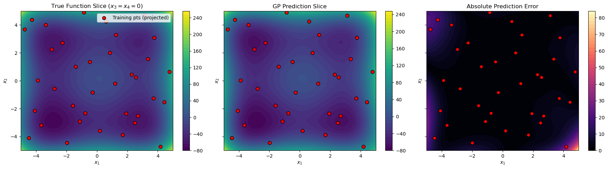
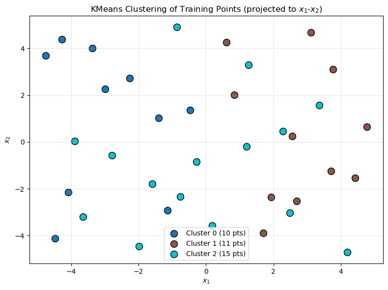

4D Derivative-Enhanced GP with KMeans Submodel Clustering#
This tutorial demonstrates a derivative-enhanced Gaussian Process (DEGP) for a high-dimensional (4D) function. Key features include:
Automatic Submodel Generation using KMeans clustering.
Sobol Sequence Sampling for low-discrepancy coverage of the 4D input space.
Specific Derivative Structure: Only main (diagonal) derivatives are used.
2D Slice Visualization for interpretability.
Configuration#
import numpy as np
# Random seed
random_seed = 1354
np.random.seed(random_seed)
# GP configuration
n_bases = 4
n_order = 2
num_points_train = 36
num_points_test = 5000
lower_bounds = [-5] * n_bases
upper_bounds = [5] * n_bases
n_clusters = 3
kernel = "SE"
kernel_type = "isotropic"
normalize = True
n_restart_optimizer = 15
swarm_size = 250
Example Function#
We use the Styblinski-Tang function, a common benchmark for optimization:
import pyoti.sparse as oti
def styblinski_tang_function(X, alg=oti):
x1, x2, x3, x4 = X[:,0], X[:,1], X[:,2], X[:,3]
return 0.5 * (x1**4 - 16*x1**2 + 5*x1 +
x2**4 - 16*x2**2 + 5*x2 +
x3**4 - 16*x3**2 + 5*x3 +
x4**4 - 16*x4**2 + 5*x4)
Data Generation (Sobol Sequence)#
We use a Sobol sequence for low-discrepancy sampling of the 4D input space:
from scipy.stats import qmc
import jetgp.utils as utils
def generate_sobol_points(num_points):
sampler = qmc.Sobol(d=n_bases, scramble=True)
samples = sampler.random_base2(m=int(np.ceil(np.log2(num_points))))
quasi_samples = samples[:num_points]
return utils.scale_samples(quasi_samples, lower_bounds, upper_bounds)
X_train = generate_sobol_points(num_points_train)
print("Training points shape:", X_train.shape)
Training points shape: (36, 4)
Submodel Generation (KMeans)#
We cluster the training points using KMeans to create submodels. Each cluster becomes a submodel with derivatives at all points in that cluster.
No reordering needed! Since WDEGP supports non-contiguous indices, we can use the original cluster assignments directly.
from sklearn.cluster import KMeans
def cluster_to_submodel_indices(X_train, n_clusters, n_order, n_bases):
"""
Cluster training points and create proper submodel_indices structure.
No reordering needed - indices can be non-contiguous!
Returns:
submodel_indices: Structure for WDEGP where
submodel_indices[submodel_idx][deriv_idx] = [list of point indices]
cluster_indices: Raw indices for each cluster (for reference)
"""
kmeans = KMeans(n_clusters=n_clusters, random_state=random_seed, n_init='auto')
labels = kmeans.fit_predict(X_train)
# Group original indices by cluster (no reordering!)
cluster_indices = [[] for _ in range(n_clusters)]
for i, label in enumerate(labels):
cluster_indices[label].append(i)
# Build submodel_indices with proper structure:
# submodel_indices[submodel_idx][deriv_idx] = [indices for that derivative]
# For 4D with main derivatives: 4 × 2 = 8 derivatives per submodel
num_derivatives = n_bases * n_order
submodel_indices = [
[indices for _ in range(num_derivatives)]
for indices in cluster_indices
]
return submodel_indices, cluster_indices
submodel_indices, cluster_indices = cluster_to_submodel_indices(
X_train, n_clusters, n_order, n_bases
)
print(f"Number of submodels: {len(submodel_indices)}")
print(f"Points per cluster: {[len(c) for c in cluster_indices]}")
print(f"Derivatives per submodel: {n_bases * n_order}")
print(f"\nsubmodel_indices structure (one entry per derivative):")
for i, sm_idx in enumerate(submodel_indices):
print(f" Submodel {i}: {len(sm_idx)} derivatives, point indices = {sm_idx[0]}")
Number of submodels: 3
Points per cluster: [10, 11, 15]
Derivatives per submodel: 8
submodel_indices structure (one entry per derivative):
Submodel 0: 8 derivatives, point indices = [3, 4, 8, 12, 15, 16, 20, 24, 31, 32]
Submodel 1: 8 derivatives, point indices = [1, 2, 6, 10, 13, 17, 21, 22, 26, 29, 34]
Submodel 2: 8 derivatives, point indices = [0, 5, 7, 9, 11, 14, 18, 19, 23, 25, 27, 28, 30, 33, 35]
Explanation:
No reordering required: Indices can be non-contiguous (e.g.,
[0, 5, 12, 23])The
submodel_indicesstructure has one entry per derivative: -submodel_indices[submodel_idx][deriv_idx]= list of training point indices for that derivative - For 4D with 2 orders: 4 × 2 = 8 entries per submodel
Prepare Submodel Data (Main Derivatives Only)#
For this 4D problem, we use only main (diagonal) derivatives: \(\frac{\partial f}{\partial x_i}\) and \(\frac{\partial^2 f}{\partial x_i^2}\) for \(i = 1, 2, 3, 4\).
This gives us 8 derivatives per submodel (4 dimensions × 2 orders).
import pyoti.sparse as oti
import jetgp.utils as utils
def prepare_submodel_data(X_train, submodel_indices, cluster_indices):
"""
Prepare derivative data for WDEGP with main derivatives only.
derivative_specs structure:
derivative_specs[submodel_idx][deriv_idx] = derivative spec
For 4D with main derivatives (8 total = 4 dims × 2 orders):
[0]: [[[1,1]]] -> df/dx1
[1]: [[[2,1]]] -> df/dx2
[2]: [[[3,1]]] -> df/dx3
[3]: [[[4,1]]] -> df/dx4
[4]: [[[1,2]]] -> d2f/dx1^2
[5]: [[[2,2]]] -> d2f/dx2^2
[6]: [[[3,2]]] -> d2f/dx3^2
[7]: [[[4,2]]] -> d2f/dx4^2
"""
# Build derivative specifications for main derivatives
# Structure: one spec per derivative (n_bases × n_order total)
main_derivatives = []
for order in range(n_order):
ders = []
for dim in range(n_bases):
ders.append([[dim+1, order+1]])
main_derivatives.append(ders)
# Each submodel uses the same derivative types
derivative_specs = [main_derivatives for _ in submodel_indices]
# Compute function values at ALL training points (shared by all submodels)
y_function_values = styblinski_tang_function(X_train, alg=np).reshape(-1, 1)
print(f"Function values shape: {y_function_values.shape}")
print(f"\nDerivative specs structure:")
print(f" Total derivatives per submodel: {len(main_derivatives)}")
for i, spec in enumerate(main_derivatives):
order = i // n_bases + 1
dim = i % n_bases + 1
print(f" [{i}] Order {order}, dim {dim}: {spec}")
# Prepare data for each submodel
submodel_data = []
for k, indices in enumerate(cluster_indices):
# Create OTI array for automatic differentiation
X_sub_oti = oti.array(X_train[indices])
# Add dual components for each dimension
for i in range(n_bases):
for j in range(X_sub_oti.shape[0]):
X_sub_oti[j, i] += oti.e(i+1, order=n_order)
# Evaluate function with OTI to get derivatives
y_with_derivatives = oti.array([
styblinski_tang_function(x, alg=oti)[0]
for x in X_sub_oti
])
# Build submodel data: [func_values, deriv_0, deriv_1, ...]
current_data = [y_function_values]
for deriv_spec in derivative_specs[k]:
for spec in deriv_spec:
deriv_values = y_with_derivatives.get_deriv(spec).reshape(-1, 1)
current_data.append(deriv_values)
submodel_data.append(current_data)
if k == 0:
print(f"\nSubmodel 0 data structure:")
print(f" Total arrays: {len(current_data)} (1 func + {len(main_derivatives)} derivs)")
print(f" [0] Function values: shape {current_data[0].shape}")
for idx, arr in enumerate(current_data[1:]):
order = idx // n_bases + 1
dim = idx % n_bases + 1
print(f" [{idx+1}] Order {order}, dim {dim}: shape {arr.shape}")
return submodel_data, derivative_specs
submodel_data, derivative_specs = prepare_submodel_data(
X_train, submodel_indices, cluster_indices
)
print(f"\nNumber of submodels: {len(submodel_data)}")
Function values shape: (36, 1)
Derivative specs structure:
Total derivatives per submodel: 2
[0] Order 1, dim 1: [[[1, 1]], [[2, 1]], [[3, 1]], [[4, 1]]]
[1] Order 1, dim 2: [[[1, 2]], [[2, 2]], [[3, 2]], [[4, 2]]]
Submodel 0 data structure:
Total arrays: 9 (1 func + 2 derivs)
[0] Function values: shape (36, 1)
[1] Order 1, dim 1: shape (10, 1)
[2] Order 1, dim 2: shape (10, 1)
[3] Order 1, dim 3: shape (10, 1)
[4] Order 1, dim 4: shape (10, 1)
[5] Order 2, dim 1: shape (10, 1)
[6] Order 2, dim 2: shape (10, 1)
[7] Order 2, dim 3: shape (10, 1)
[8] Order 2, dim 4: shape (10, 1)
Number of submodels: 3
Explanation:
The data structures are:
derivative_specs:
derivative_specs[submodel][deriv_idx]= derivative specificationOne entry per derivative (8 total for 4D × 2 orders)
Example:
[[[1,1]]]means derivative w.r.t. dimension 1, order 1
submodel_data:
submodel_data[submodel]=[func_values, deriv_0, deriv_1, ..., deriv_7]First element is function values at ALL training points
Each subsequent element corresponds to one derivative in derivative_specs
Build and Optimize GP#
from jetgp.wdegp.wdegp import wdegp
print("Building WDEGP model...")
print(f" Training points: {X_train.shape[0]}")
print(f" Submodels: {len(submodel_indices)}")
print(f" Derivatives per submodel: {n_bases * n_order} (main only)")
gp_model = wdegp(
X_train, submodel_data, n_order, n_bases,
derivative_specs, derivative_locations = submodel_indices, normalize=normalize,
kernel=kernel, kernel_type=kernel_type
)
print("\nOptimizing hyperparameters...")
params = gp_model.optimize_hyperparameters(
optimizer='jade',
pop_size=100,
n_generations=15,
local_opt_every=None,
debug=True
)
print("\nGP model built and optimized.")
Building WDEGP model...
Training points: 36
Submodels: 3
Derivatives per submodel: 8 (main only)
Optimizing hyperparameters...
Gen 1: best f=833.1430958969249
Gen 2: best f=833.1430958969249
Gen 3: best f=833.1430958969249
Gen 4: best f=833.1430958969249
Gen 5: best f=814.1692957094556
Gen 6: best f=785.9341142684408
Gen 7: best f=785.9341142684408
Gen 8: best f=759.816677316089
Gen 9: best f=759.816677316089
Gen 10: best f=745.4057774985336
Gen 11: best f=745.4057774985336
Gen 12: best f=734.8498681056285
Gen 13: best f=734.8498681056285
Gen 14: best f=721.6775294703954
Gen 15: best f=721.6775294703954
GP model built and optimized.
Evaluate Model Performance#
# Generate test points
X_test = generate_sobol_points(num_points_test)
# Predict
y_pred = gp_model.predict(X_test, params, calc_cov=False)
y_true = styblinski_tang_function(X_test, alg=np)
# Compute error metrics
rmse = np.sqrt(np.mean((y_true - y_pred.flatten())**2))
nrmse = rmse / (y_true.max() - y_true.min())
mae = np.mean(np.abs(y_true - y_pred.flatten()))
print(f"Test set size: {num_points_test}")
print(f"RMSE: {rmse:.6f}")
print(f"NRMSE: {nrmse:.6f}")
print(f"MAE: {mae:.6f}")
Test set size: 5000
RMSE: 28.998336
NRMSE: 0.059993
MAE: 10.629328
2D Slice Visualization#
Since we cannot visualize 4D directly, we create a 2D slice by fixing \(x_3 = x_4 = 0\):
import matplotlib.pyplot as plt
# Evaluate on 2D slice (x3=0, x4=0)
grid_points = 50
x1x2_lin = np.linspace(lower_bounds[0], upper_bounds[0], grid_points)
X1_grid, X2_grid = np.meshgrid(x1x2_lin, x1x2_lin)
X_slice = np.column_stack([X1_grid.ravel(), X2_grid.ravel()])
X_slice = np.hstack([X_slice, np.zeros((X_slice.shape[0], 2))]) # x3=0, x4=0
y_slice_pred = gp_model.predict(X_slice, params, calc_cov=False)
y_slice_true = styblinski_tang_function(X_slice, alg=np)
# Contour plots
fig, axes = plt.subplots(1, 3, figsize=(18, 5), sharex=True, sharey=True)
# Project training points to 2D (showing x1, x2 coordinates)
X_train_proj = X_train[:, :2]
# True function
c1 = axes[0].contourf(X1_grid, X2_grid, y_slice_true.reshape(X1_grid.shape),
levels=50, cmap="viridis")
fig.colorbar(c1, ax=axes[0])
axes[0].set_title("True Function Slice ($x_3=x_4=0$)")
axes[0].scatter(X_train_proj[:, 0], X_train_proj[:, 1],
c="red", edgecolor="k", s=50, label="Training pts (projected)")
# GP prediction
c2 = axes[1].contourf(X1_grid, X2_grid, y_slice_pred.reshape(X1_grid.shape),
levels=50, cmap="viridis")
fig.colorbar(c2, ax=axes[1])
axes[1].set_title("GP Prediction Slice")
axes[1].scatter(X_train_proj[:, 0], X_train_proj[:, 1],
c="red", edgecolor="k", s=50)
# Absolute error
error_grid = np.abs(y_slice_true - y_slice_pred.flatten())
c3 = axes[2].contourf(X1_grid, X2_grid, error_grid.reshape(X1_grid.shape),
levels=50, cmap="magma")
fig.colorbar(c3, ax=axes[2])
axes[2].set_title("Absolute Prediction Error")
axes[2].scatter(X_train_proj[:, 0], X_train_proj[:, 1],
c="red", edgecolor="k", s=50)
for ax in axes:
ax.set_xlabel("$x_1$")
ax.set_ylabel("$x_2$")
axes[0].legend(loc='upper right')
plt.tight_layout()
plt.show()

Cluster Visualization#
Visualize how KMeans partitioned the training points:
fig, ax = plt.subplots(figsize=(8, 6))
colors = plt.cm.tab10(np.linspace(0, 1, n_clusters))
for k, indices in enumerate(cluster_indices):
X_cluster = X_train[indices, :2]
ax.scatter(X_cluster[:, 0], X_cluster[:, 1],
c=[colors[k]], s=100, edgecolor='k',
label=f'Cluster {k} ({len(indices)} pts)')
ax.set_xlabel("$x_1$")
ax.set_ylabel("$x_2$")
ax.set_title("KMeans Clustering of Training Points (projected to $x_1$-$x_2$)")
ax.legend()
ax.grid(alpha=0.3)
plt.tight_layout()
plt.show()

—
Summary#
This tutorial demonstrated WDEGP for a 4D problem with:
Key features:
KMeans clustering to automatically partition training points into submodels
No reordering required: Non-contiguous indices are supported directly
Main derivatives only: \(\frac{\partial f}{\partial x_i}\) and \(\frac{\partial^2 f}{\partial x_i^2}\) (8 derivatives per submodel)
Sobol sequence sampling for space-filling design in 4D
Data structures:
submodel_indices[submodel][deriv_idx]= point indices for that derivative (one entry per derivative)derivative_specs[submodel][deriv_idx]= derivative spec (e.g.,[[[1, 1]]]for df/dx1)submodel_data[submodel]=[func_values, deriv_0, deriv_1, ..., deriv_7]
Advantages of this approach:
No data reordering: Use cluster indices directly without reorganizing training data
Scales to higher dimensions by using only main derivatives (avoiding combinatorial explosion)
KMeans provides automatic, data-driven submodel partitioning
Each submodel captures local behavior within its cluster